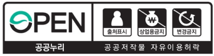

<!-- Header -->
<%- include('../_ejs/top.ejs', {
    title: "KCYCLE 경륜",
    url: "../../"
}) %>

<!-- 레이아웃 -->
<div class="lytLayout">
    <div class="layoutArea">

        <!-- 상단영역 -->
        <div class="layoutTop">
            <!-- Top -->
            <%- include('../_ejs/header.ejs', {
                url: "../../"
            }) %>
        </div>
        <!-- //상단영역 -->

        <!-- 중단영역 -->
        <div class="layoutContainer" id="container">

            <!-- 서브 콘텐츠 영역 -->
            <div class="layoutSubCont">

                <!-- 서브 컨텐츠 내용이 들어오는 영역-->
                <!-- 서브 탑 (타이틀) -->
                <%- include('../_ejs/sub_top.ejs', {
                    location: ['총괄본부'],
                    subTitle: 'BI소개',
                    subText: '경륜경정의<br><b>BI를 확인해보세요.</b>',
                    url: "../../",
                    visualClass: "bg01",
                }) %>

                <div class="layoutContArea">
                    
                    <div class="cptContKBI">
                        <div class="contArea">
                            <div class="comTitH2">
                                <h2>KCYCLE Brand Identity</h2>
                            </div>
                            <div class="comBasicTxt">
                                <p class="txt">
                                    국민체육진흥공단의 경륜경정총괄본부 - 경륜 심벌마크는 KCYCLE의 Identifier의 조형적 특징 및 상징성을 가장 잘 드러내는 요소입니다. Identity의 왜곡, 변형 및 오남용 등에 따른 이미지 손상방지를 위하여 심벌마크 적용에 따른 규정과 원칙을 반드시 준수하여야 합니다.
                                </p>
                            </div>
                            <div class="biCont">
                                <div class="wd50">
                                    <div class="bi">
                                        
                                    </div>
                                </div>
                                <div class="wd50 monoon">
                                    <div class="bi">
                                        
                                    </div>
                                </div>
                            </div>
                            <div class="downBtn">
                                <a href="#" class="btn md dkLine pcW128 downIcon" target="_blank">다운로드</a>
                            </div>
                        </div>
                    </div>

                    <div class="cptContKBI mgH32">
                        <div class="contArea">
                            <div class="comTitH2">
                                <h2>KBOAT Brand Identity</h2>
                            </div>
                            <div class="comBasicTxt">
                                <p class="txt">
                                    국민체육진흥공단의 경륜경정총괄본부 - 경정 심벌마크는 KBOAT의 Identifier의 조형적 특징 및 상징성을 가장 잘 드러내는 요소입니다. Identity의 왜곡, 변형 및 오남용 등에 따른 이미지 손상방지를 위하여 심벌마크 적용에 따른 규정과 원칙을 반드시 준수하여야 합니다.
                                </p>
                            </div>
                            <div class="biCont">
                                <div class="wd50">
                                    <div class="bi">
                                        
                                    </div>
                                </div>
                                <div class="wd50 monoon">
                                    <div class="bi">
                                        
                                    </div>
                                </div>
                            </div>
                            <div class="downBtn">
                                <a href="#" class="btn md dkLine pcW128 downIcon" target="_blank">다운로드</a>
                            </div>
                        </div>
                    </div>
                    
                    <div class="cptQuickMove">
                        <div class="boxArea interval copyright bbsViewBt">
                            <div class="quickBox">
                                <div class="alignLeft">
                                    <p class="txt">본 공공저작물은 공공누리 <b>“출처표시+상업적이용금지+변경금지”</b> 조건에 따라 이용할 수 있습니다.</p>
                                </div>
                                <div class="alignRight">
                                    
                                </div>
                            </div>
                        </div>
                    </div>
                    
                </div>

                <!-- //서브 컨텐츠 내용이 들어오는 영역-->

                <!-- 서브 바텀 (담당자) -->
                <%- include('../_ejs/sub_btm.ejs', {
                    team: '사업홍보팀',
                    name: '정소영',
                    phone: '02-2067-5376',
                    url: "../../",
                }) %>
                <!-- //서브 컨텐츠 내용이 들어오는 영역-->
                
            </div>
            <!-- //서브 콘텐츠 영역 -->

        </div>
        <!-- //중단영역 -->

        <!-- 하단영역 -->
        <div class="layoutFooter">
            <!-- Footer -->
            <%- include('../_ejs/footer.ejs', {
                url: "../../"
            }) %>
        </div>
        <!-- //하단영역 -->

    </div>
</div>


<!-- Bottom -->
<%- include('../_ejs/bottom.ejs', { }) %>